المدرسة الانجليزية الفحيحيل
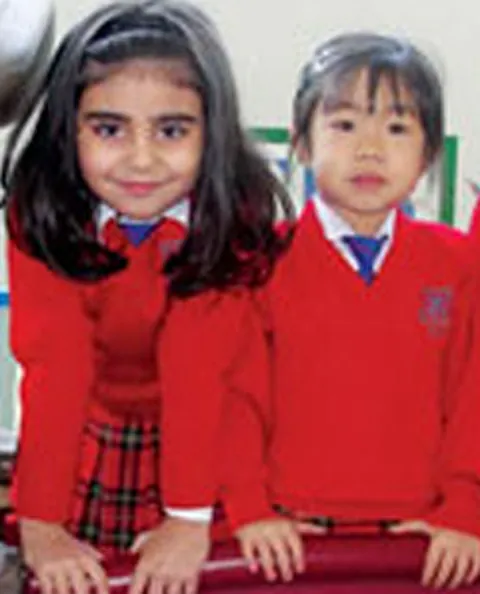
المرحلة الدنيا
الروضة وصف الاستقبال، وفق منهج المرحلة التأسيسية البريطاني.
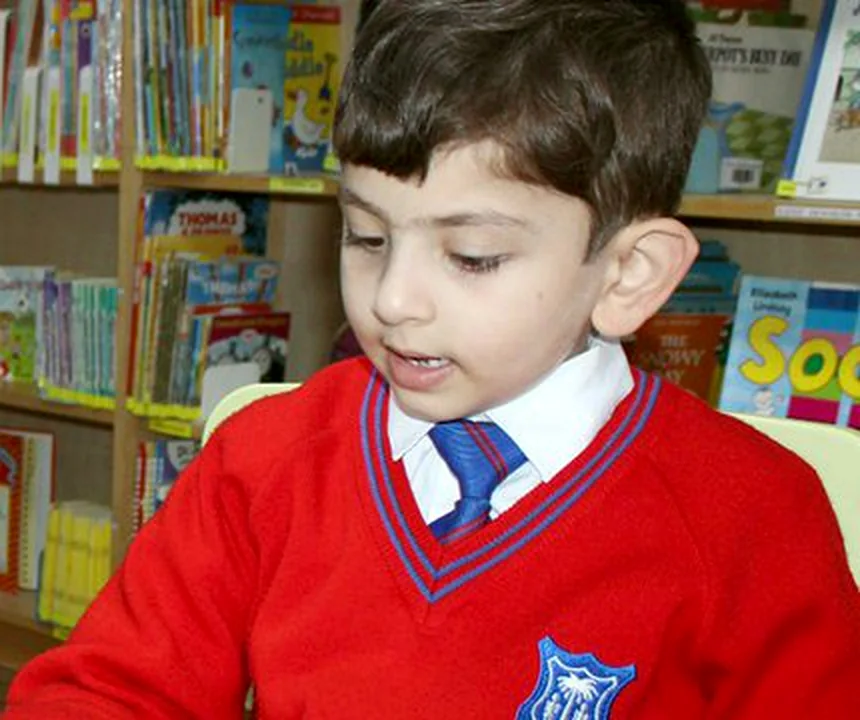
المرحلة المتوسطة
من الصف الثالث إلى السادس. القراءة والحساب والعلوم أولاً.
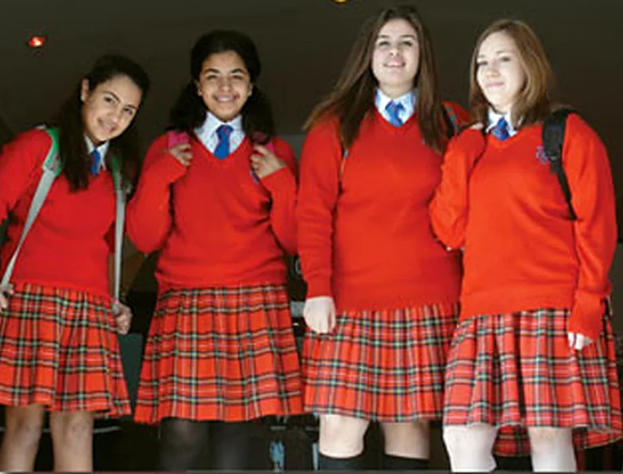
المرحلة العليا
من عمر 11 سنة، بعد اختبار قبول ومقابلة.
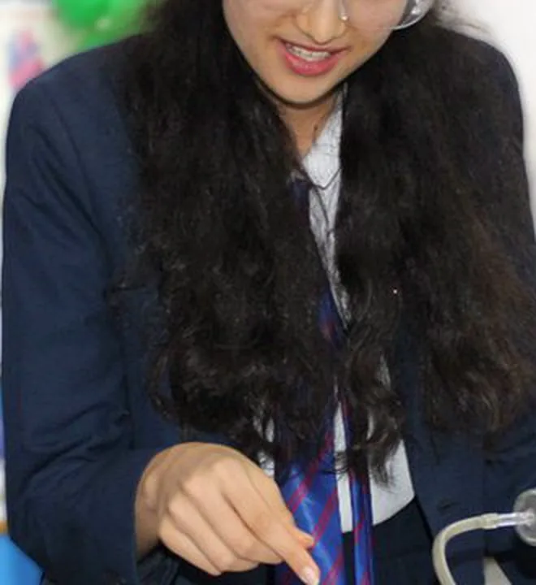
IGCSE و A Level
كامبريدج الدولية وإديكسل، وتُصحَّح الأوراق في المملكة المتحدة.
الصف الثالث عشر
مركز السادس الثانوي، ثم الجامعة. دفعة 2024.
مدرسة بريطانية في المنقف بجنوب الكويت، أسسها عام 1968 عدد من أولياء الأمور المقيمين. نتبع المنهج الوطني لإنجلترا وويلز من صف الاستقبال في عمر 4 سنوات حتى الصف الثالث عشر في عمر 18 سنة، بما يحقق متطلب 12 سنة من التعليم المتواصل.
تُدرَّس اللغة العربية والتربية الإسلامية وفق منهج وزارة التربية، في فصول منفصلة للعرب وغير العرب. والفرنسية من الصف الرابع. المناهج كاملة
نحن أولياء أمور أيضاً، ولهذا نُصرّ على أن يجتهد طلابنا، وأن يحسنوا السلوك، وأن يكونوا مصدر فخر لمدرستهم ولأهاليهم.من فلسفة المدرسة الانجليزية الفحيحيل
تُدار المدرسة على أسس المدرسة الإنجليزية التقليدية: مستوى أكاديمي عالٍ، وسلوك حسن، وانضباط حازم، مع فهم واضح لاحتياجات كل طالب.
من حق كل طفل أن يتعلّم، أياً كان عرقه أو لونه أو لغته.
- 1968
- التأسيس بإشراف القنصل البريطاني
- 2005
- الانتقال إلى المبنى الجديد في المنقف
أقدم مدرسة إنجليزية في الكويت
عندما فتحنا أبوابنا لم تكن في جنوب الكويت مدرسة أخرى تدرّس بالإنجليزية، سوى مدرسة شركة نفط الكويت في الأحمدي لأبناء موظفيها.
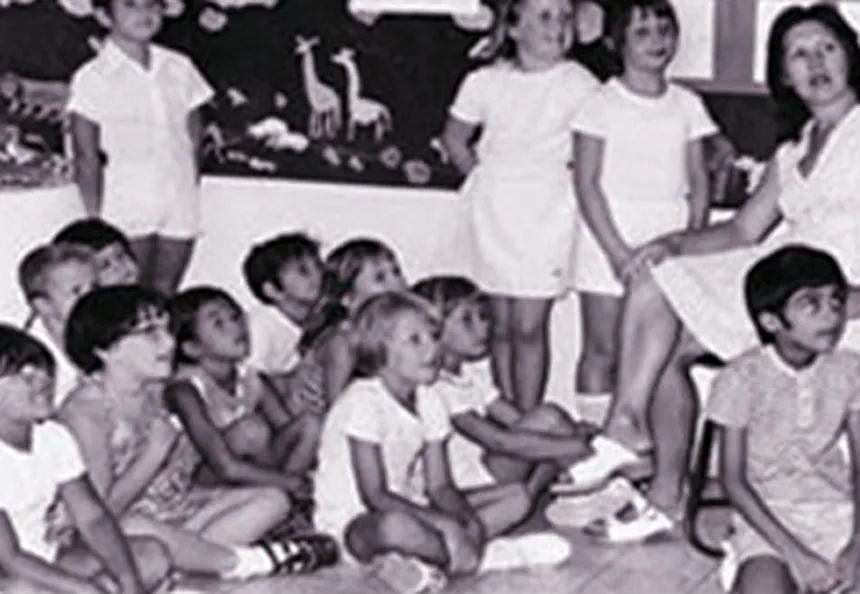
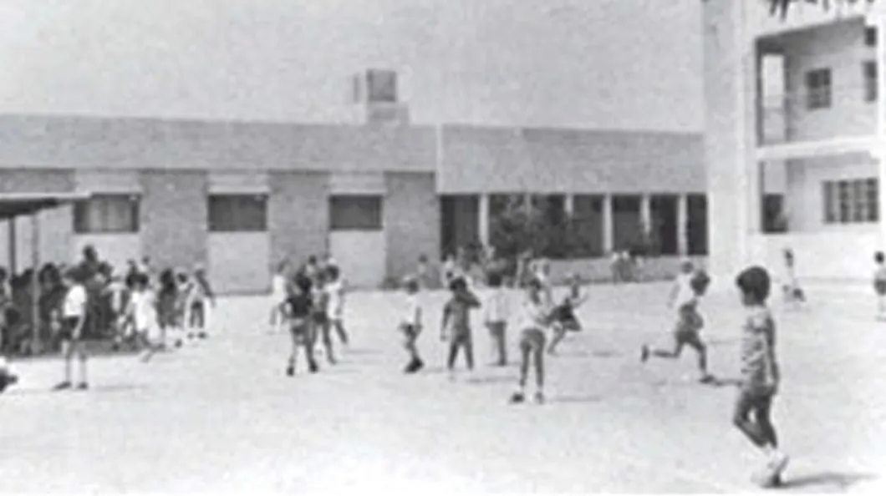
التأسيس على يد مجموعة من أولياء الأمور المقيمين بإشراف القنصل البريطاني، واعتراف إدارة التعليم الخاص بوزارة التربية في العام نفسه. وبدأت بعدد قليل من الطلاب.
بناء مجموعة فصول وقاعة للطابور الصباحي، لاستقبال أبناء موظفي شركة نفط الكويت بعد إغلاق مدرستهم في الأحمدي.
إضافة طابق علوي إلى المبنى الرئيسي، وزيادة كبيرة في عدد المقاعد.
الغزو. اتخذ الجيش المحتل المدرسة مقراً للقيادة ونهب أثاثها ووسائلها التعليمية.
بعد التحرير قرر مالك المدرسة السيد Ibrahim Shuhaiber أن يعيدها كما كانت. ساعدت القوات البريطانية في إزالة الألغام والذخائر من المنطقة والشاطئ، وسرعان ما استعادت المدرسة مكانتها بين أفضل المدارس الإنجليزية في الكويت.
في يناير انتقلت المدرسة إلى مبناها الجديد في المنقف قرب البحر، وكانت أول مدرسة توفّر الإنترنت اللاسلكي في كامل المبنى.
تفتيش في مايو أجراه السيد Terry McDermott، مفتش إضافي معتمد من Ofsted لدى الحكومة البريطانية.
مبنى المنقف
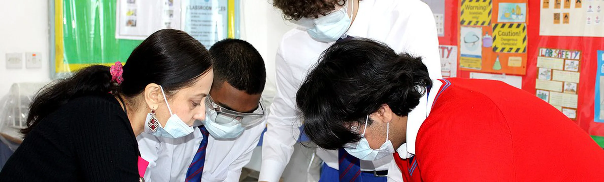
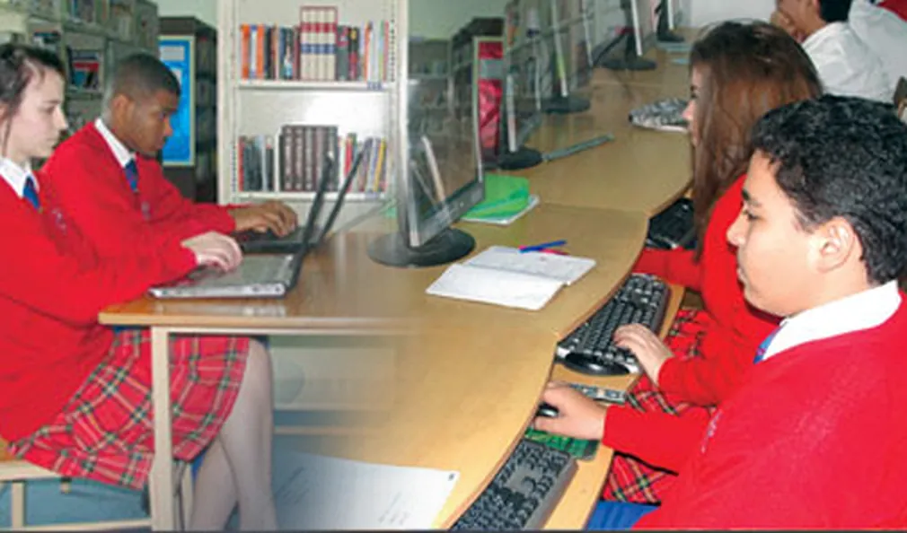
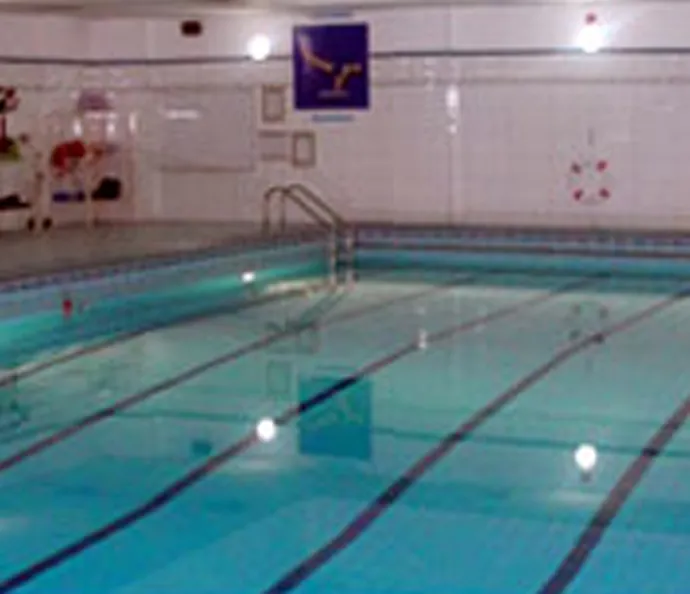
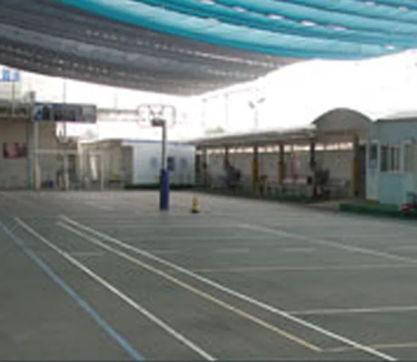
مكيّف بالكامل، وكاميرات مراقبة في الداخل والخارج، وحراسة على البوابات طوال اليوم الدراسي. هكذا أراده المالك ليطمئن الأهل على أبنائهم.
- ستة مختبرات علوم مع غرف التحضير
- مسرحان: مسرح لويد ويبر ومسرح جولي أندروز
- مسبح داخلي كبير
- صالة رياضية متعددة الأغراض ونادٍ رياضي مجهّز
- أربع غرف موسيقى وغرف للخزف والفنون
- مكتبتان للمرحلتين الأولى والثانية وللمرحلة الثانوية
- أربعة مراكز حاسوب بإنترنت لاسلكي
- أربع غرف للروضة وأربع لصف الاستقبال مع مناطق لعب
- عيادة فيها ممرضة مؤهلة بدوام كامل
- غرفة لقاء خاصة بين الأهل والمعلمين
- مسجد ومقصف وكافتيريا خارج المبنى
التسجيل للعام الدراسي 2026–2027
يتم القبول وفق لوائح وزارة التربية الكويتية. وعندما تزيد الطلبات على المقاعد المتاحة نحتفظ بقائمة انتظار.
- الروضةلقاء ومقابلة مع ولي الأمر والطفل ومعلمة الروضة المسؤولة.
- المرحلة الابتدائيةاختبار كتابي عند الحاجة، ثم مقابلة مع مدير المرحلة الابتدائية.
- المرحلة الثانويةاختبار قبول ومقابلة مع الطالب وولي الأمر ومدير المرحلة الثانوية.
المستندات المطلوبة
- شهادة الميلاد وسجل التطعيم
- جواز سفر الأب والطالب مع الإقامة (لغير الكويتيين)
- البطاقة المدنية للطالب والأب
- آخر شهادة مدرسية، مترجمة إلى الإنجليزية عند الحاجة
- شهادة جنسية الأب (للكويتيين)
- صورتان شخصيتان
- الملف الصحي المدرسي
عند القبول يُدفع تأمين قدره 200 دينار كويتي. والطلاب المنتقلون من مدرسة أخرى في الكويت يحتاجون أيضاً إلى كتاب إخلاء طرف.

زورونا
المدرسة الانجليزية الفحيحيل، المنقف، الكويت
في المنقف قرب البحر. العنوان البريدي: ص.ب 7209 الفحيحيل، الرمز البريدي 64003. يسعد المعلمون بلقاء أولياء الأمور في أي وقت بموعد مسبق عبر مكتب المدرسة.
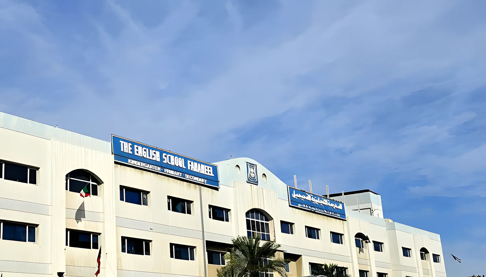
المدرسة في المنقف قرب البحر، في مبناها منذ يناير 2005.